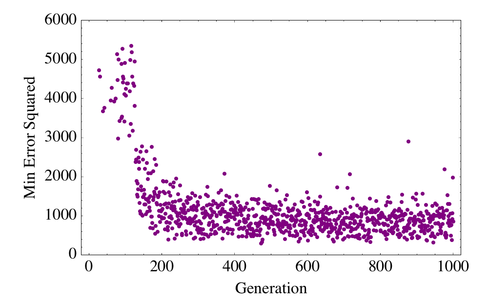

Evolving an Inverted Pendulum Controller with a Genetic Algorithm
Background
The task of a controller is to determine and manipulate the inputs of a system in a way such that the output of that system matches with some desired outputs. For the purpose of maintaining a stable desired output, PID (proportional, integral, derivative) controllers are typically used.
Problem Statement
Balancing an inverted pendulum is a classic control problem. Typically, a coupled PID controller is used, one to keep the pendulum balanced, and one to maintain the horizontal position of the system.
Our goal is to train a multilayer perceptron (MLP) that is able perform as well as or better than a PID controller at balancing the inverted pendulum. The MLP will be given 4 inputs: angle of rotation, rate of rotation, translational position, translational velocity, and will output the control force.
Genetic Algorithm
Organisms
A genetic algorithm (GA) is used to evolve the optimal weights and biases for the MLP controller. Each MLP, represented as a list of weights and biases matrices, plays the role of an organism. The population consists of 100 MLPs.
Crossing
Two MLPs are crossed by taking the weighted average of their corresponding weights and biases. This weighted average is drawn from a uniform distribution between 0 and 1. To prevent the population from being stuck at some local minima, mutants (MLPs with randomly initialized weights and biases) are introduced to the population randomly in each generation.
For this form of crossing, it was found that using linear activation functions worked best. Even though this makes the MLP equivalent to an adaline, maintaining multiple layers and neurons helped the MLPs evolved faster.
Fitness
In each generation of the GA, each MLP is used to control a simulated inverted system (initialized with random left and right perturbations) for 1000 time steps, equivalent to 10 seconds. At each time step, we set the desired angle of the pendulum to 180 degrees (upright), the desired angular velocity to 0, the desired translational position to 0 (center), and the desired translational speed to 0 (stationary).
The error of each MLP is determined by summing the square of the difference between actual and desired at each time step. Organisms with lower error are fitter. The 15 fittest MLP are chosen to do pair-wise crossing to produce the population for the next generation.
Results
After evolving for 1000 generations, the genetic algorithm is able to produce an optimal set of weights and biases for a controller that balances and centers the inverted pendulum. On a Gentoo server with 4 AMD Opteron 6276 CPUs (64 cores total), evolving for 1000 generations takes approximately 1 hour and 50 minutes.
Evolution Snapshots
The videos above show the best MLP at generation 10, 20, 50 and 200 respectively from top to bottom left to right. At generation 10, the MLP is able to prevent the pendulum from falling over, but is unable to stabilize or center the system. At generation 20, the MLP is initially better at centering the system, but still goes off the frame. At generation 50, the MLP is now able to prevent the system from moving off frame, but still has some difficulty stabilizing the system. By generation 200, the MLP is able to both stabilize and center system, but exhibit a slight overshoot.

The plot above shows the error of the fittest MLP at each generation. Jumps in the error are due to the pendulum being initialized randomly with more extreme perturbations.
Demonstration and Comparison
A demonstration of an evolved MLP (after 1000 generations) stabilizing an inverted pendulum is shown below.
For comparison, the next demonstration shows a coupled PID controller doing the same task.
The evolved MLP controller stabilizes the inverted pendulum as quickly as the PID controller, and exhibits virtually no overshoot. In addition, the evolved MLP controller is faster at centering the system than the PID controller. It's possible that additional gain adjustments could make the PID controller better; the advantage of evolving the controller is that the fine tune adjustments are handled automatically by the GA and doesn't have to be done manually.